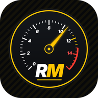

RideMind
Πολιτική απορρήτου
Τελευταία ενημέρωση: 14 Νοεμβρίου 2026 (Παρέα: κοινότητα αναβατών, πόντοι και επίπεδο, μηνύματα φίλων) · English · Español
Η εφαρμογή RideMind («η εφαρμογή») αναπτύσσεται από ιδιώτη προγραμματιστή στην Ελλάδα. Υπεύθυνος επεξεργασίας: Anastasis Koutoufos, Lefkimmi, Corfu, 49080, Greece. Επικοινωνία (και για τα δικαιώματά σου): info@ridemind.eu. Η εφαρμογή δεν έχει διαφημίσεις και δεν χρησιμοποιεί εργαλεία ανάλυσης (analytics) ή παρακολούθησης.
Τι κρατάμε στον λογαριασμό σου
| Στοιχείο | Γιατί |
|---|---|
| Για να μπαίνεις στον λογαριασμό σου και να επαναφέρεις τον κωδικό σου. |
Αν μπεις με Google, παίρνουμε από εκεί μόνο το email σου. Τον κωδικό σου δεν τον βλέπουμε ποτέ: τον διαχειρίζεται το Firebase Authentication της Google.
RideMind Pro
Η αγορά του RideMind Pro γίνεται μέσω του Google Play: τα στοιχεία πληρωμής τα διαχειρίζεται η Google και δεν τα βλέπουμε ποτέ. Την αγορά την επιβεβαιώνει ο server μας απευθείας στο Google Play. Στον λογαριασμό σου κρατάμε μόνο:
- ότι το Pro είναι ενεργό, με τον αριθμό παραγγελίας και την ημερομηνία·
- ένα μη αναστρέψιμο αποτύπωμα (hash) του κωδικού αγοράς, ώστε μία αγορά να αντιστοιχεί σε έναν μόνο λογαριασμό·
- αν ξεκινήσεις τη δωρεάν δοκιμή, την έναρξη και τη λήξη της, καθώς και ένα μη αναστρέψιμο αποτύπωμα (hash) του email σου, ώστε να μη δίνεται δεύτερη φορά ούτε μετά τη διαγραφή και επανεγγραφή του λογαριασμού.
Για τις προσφορές (π.χ. Founding Rider) ελέγχεται η ημερομηνία δημιουργίας του λογαριασμού σου. Αν μια αγορά ακυρωθεί ή επιστραφούν τα χρήματα, το Google Play μάς ενημερώνει και το Pro αφαιρείται.
Backup στο cloud (προαιρετικό, Pro)
Μόνο αν το ενεργοποιήσεις εσύ από τις Ρυθμίσεις, αντίγραφο των δεδομένων της εφαρμογής (μηχανές, χιλιόμετρα, service, καύσιμα, έξοδα, βόλτες και διαδρομές, πάρκινγκ, ρυθμίσεις, επαφές και στοιχεία της κάρτας ανάγκης) αποθηκεύεται στον λογαριασμό σου, ώστε να το επαναφέρεις σε νέο κινητό. Το βλέπεις μόνο εσύ. Αν το απενεργοποιήσεις, δεν στέλνεται τίποτα νέο· αν διαγράψεις τον λογαριασμό σου, διαγράφεται και το backup.
Σφάλματα & προτάσεις
Αν μας στείλεις μήνυμα από Ρυθμίσεις (⚙️) › Σφάλματα & προτάσεις, αποθηκεύουμε το κείμενό σου, όσες εικόνες (screenshots) επισυνάψεις, το email σου (για να σου απαντήσουμε) και, αν το αφήσεις επιλεγμένο, τεχνικά στοιχεία: έκδοση εφαρμογής, μοντέλο κινητού, μάρκα και μοντέλο μηχανής και διάγνωση OBD. Τα χρησιμοποιούμε μόνο για να σου απαντήσουμε και για να διορθώνουμε την εφαρμογή. Τα μηνύματα τα βλέπεις μόνο εσύ και ο διαχειριστής.
Τι μένει μόνο στο κινητό σου
Οι μηχανές σου, χιλιόμετρα, service, καύσιμα, έξοδα, βόλτες και διαδρομές, αρχεία καταγραφής CSV, ενδείξεις OBD και πίεσης ελαστικών, θέση πάρκινγκ, επαφές ανάγκης και ιατρικά στοιχεία της κάρτας ανάγκης καθώς και τα σήματα, αποθηκεύονται μόνο στη συσκευή σου και δεν στέλνονται σε εμάς, εκτός αν ενεργοποιήσεις το backup στο cloud (Pro). Αν εισαγάγεις ανεφοδιασμούς από αρχείο CSV (π.χ. Fuelio, Drivvo, Fuelly), το αρχείο διαβάζεται μόνο στο κινητό σου και δεν ανεβαίνει σε server· οι εγγραφές που εισάγονται μένουν μόνο στο κινητό σου (και στο backup στο cloud, αν το έχεις ενεργό).
Άδειες της συσκευής
- Τοποθεσία: μόνο όσο η εφαρμογή είναι ανοιχτή, για καταγραφή βόλτας, πρόγνωση καιρού, πάρκινγκ, το μήνυμα ανάγκης. Δεν χρησιμοποιείται στο παρασκήνιο.
- Συσκευές κοντά (Bluetooth): για σύνδεση με αντάπτορα OBD και αισθητήρες πίεσης ελαστικών.
- Αισθητήρες κίνησης: για ενδεικτική κλίση και ανίχνευση πτώσης.
- Ειδοποιήσεις: για βλάβες OBD, όρια οργάνων και υπενθυμίσεις ΚΤΕΟ, τελών κυκλοφορίας, ασφάλισης και service. Οι υπενθυμίσεις προγραμματίζονται στη συσκευή σου με βάση τις ημερομηνίες που έχεις καταχωρίσει. Δεν στέλνονται από server και δεν φεύγουν δεδομένα από το κινητό.
Για τον καιρό στέλνονται συντεταγμένες, χωρίς άλλα στοιχεία σου, στην υπηρεσία Open-Meteo. Ο χάρτης της διαδρομής φορτώνει εικόνες χάρτη από το Mapbox (με δεδομένα OpenStreetMap)· ο πάροχος βλέπει τη διεύθυνση IP σου και την περιοχή του χάρτη που βλέπεις, ενώ η διαδρομή σου δεν στέλνεται πουθενά. Το μήνυμα ανάγκης (SMS) το στέλνεις εσύ από την εφαρμογή μηνυμάτων του κινητού.
Πού φυλάσσονται και για πόσο
Στο Google Firebase (Authentication, Cloud Firestore και Cloud Functions), σε servers της Ευρωπαϊκής Ένωσης, με κρυπτογράφηση κατά τη μεταφορά. Τα στοιχεία του λογαριασμού τα κρατάμε όσο υπάρχει ο λογαριασμός σου· οι κοινές βόλτες και τα μηνύματά τους σβήνονται το αργότερο 24 ώρες μετά την έναρξη της βόλτας. Δεν πουλάμε και δεν μοιραζόμαστε τα στοιχεία σου με κανέναν.
Τα δικαιώματά σου
Έχεις δικαίωμα πρόσβασης, διόρθωσης, διαγραφής και φορητότητας των στοιχείων σου (GDPR). Μπορείς να διαγράψεις οριστικά τον λογαριασμό σου από την εφαρμογή ή να το ζητήσεις όπως περιγράφεται στη σελίδα Διαγραφή λογαριασμού. Έχεις επίσης δικαίωμα καταγγελίας στην Αρχή Προστασίας Δεδομένων Προσωπικού Χαρακτήρα (dpa.gr).
Παρέα (κοινότητα αναβατών)
Αν φτιάξεις προφίλ στην Παρέα, αποθηκεύουμε το όνομα που διάλεξες, τον νομό σου, τη μηχανή σου και, προαιρετικά, τα κυβικά και μια φωτογραφία προφίλ. Το προφίλ το βλέπουν οι υπόλοιποι χρήστες της Παρέας. Η θέση του κινητού σου δεν στέλνεται σε άλλους χρήστες.
Όταν δημοσιεύεις μια βόλτα, αποθηκεύουμε τον τίτλο, την ημερομηνία και ώρα, την περιοχή συνάντησης, τον προορισμό, το επίπεδο, την κατηγορία και την ανακοίνωσή σου. Μια δημόσια βόλτα φαίνεται στους χρήστες της Παρέας στον νομό σου· μια βόλτα παρέας φαίνεται μόνο στα μέλη της. Το ακριβές σημείο συνάντησης, αν το γράψεις, σε δημόσια βόλτα φαίνεται μόνο σε εσένα και σε όσους πατήσουν «Έρχομαι»· σε βόλτα παρέας φαίνεται σε όλα τα μέλη της παρέας (και σε μια ανοιχτή παρέα μπαίνει οποιοσδήποτε χρήστης του νομού). Μη γράφεις τη διεύθυνση του σπιτιού σου. Οι βόλτες και οι απαντήσεις σβήνονται αυτόματα 24 ώρες μετά την έναρξη, ή 48 ώρες μετά το κλείσιμο αν τις κλείσεις ως ολοκληρωμένες ή ακυρωμένες.
Πόντοι και επίπεδο: αν έχεις προφίλ στην Παρέα, η εφαρμογή στέλνει στον server τα γεγονότα που τους δίνουν (ημερομηνία, ώρα έναρξης/λήξης και χιλιόμετρα κάθε βόλτας, ημερομηνίες ανεφοδιασμών και service, χωρίς διαδρομή ή θέση), ώστε ο server να τους υπολογίζει και να τους ελέγχει. Φυλάσσονται σε έγγραφο που δεν διαβάζεται από άλλους. Μόνο το επίπεδο (0–4) φαίνεται ως σύμβολο δίπλα στο όνομά σου στους χρήστες της Παρέας. Το όνομα χρήστη (λατινικοί χαρακτήρες, μοναδικό) δεσμεύεται σε σένα όσο υπάρχει το προφίλ σου και ελευθερώνεται όταν το αλλάξεις ή το διαγράψεις. Διαγράφονται όλα μαζί με το προφίλ ή τον λογαριασμό σου.
Αποθηκεύουμε επίσης τους φίλους και τα αιτήματα φιλίας σου, τις παρέες σου (όνομα και μέλη), τις προσκλήσεις και τα αιτήματα συμμετοχής (σβήνονται σε 14 ημέρες αν δεν απαντηθούν), τους χρήστες που αποκλείεις, το αναγνωριστικό της συσκευής σου για push ειδοποιήσεις (Firebase Cloud Messaging της Google) αν τις ενεργοποιήσεις, και ημερήσιους μετρητές χρήσης (πόσες βόλτες και αιτήματα έκανες) για προστασία από κατάχρηση.
Μπορείς να αναφέρεις έναν χρήστη. Η αναφορά περιέχει ποιος αναφέρει ποιον, τον λόγο και προαιρετικό σχόλιο, τη βλέπει μόνο ο διαχειριστής και διατηρείται 12 μήνες για λόγους ασφάλειας της κοινότητας. Ο διαχειριστής μπορεί να αποκλείσει χρήστη από την Παρέα. Όταν διαγράψεις το προφίλ ή τον λογαριασμό σου, διαγράφονται το προφίλ, οι βόλτες, οι απαντήσεις, οι φιλίες, οι αποκλεισμοί, οι προσκλήσεις, το αναγνωριστικό push και οι μετρητές σου.
Μηνύματα μεταξύ φίλων: μπορείς να στέλνεις μηνύματα κειμένου (έως 500 χαρακτήρες) μόνο σε χρήστες που έχεις αποδεκτούς φίλους. Αποθηκεύουμε το κείμενο, τον αποστολέα και την ώρα, και το πρόσφατο υπόλοιπο της συνομιλίας (τελευταίο μήνυμα, αδιάβαστα). Τα μηνύματα διαγράφονται αυτόματα μετά από 7 ημέρες και οι συνομιλίες χωρίς μηνύματα σβήνονται ολόκληρες. Δεν είναι κρυπτογραφημένα από άκρο σε άκρο και δεν τα διαβάζουμε, εκτός αν αναφερθούν. Αν αναφέρεις ένα μήνυμα, στέλνονται στον διαχειριστή τα τελευταία 15 μηνύματα της συνομιλίας για έλεγχο, και διατηρούνται μαζί με την αναφορά για 12 μήνες. Μπορείς να σταματήσεις τις ειδοποιήσεις μηνυμάτων από τις Ρυθμίσεις, να διαγράψεις τη συνομιλία για σένα, να αποκλείσεις τον φίλο ή να τον αφαιρέσεις. Η νομική βάση είναι η εκτέλεση της υπηρεσίας που ζητάς και το έννομο συμφέρον μας για την ασφάλεια της κοινότητας. Όταν διαγράψεις τον λογαριασμό σου, διαγράφονται και οι συνομιλίες σου (όσα μηνύματα έχεις στείλει σβήνονται μαζί).
Ανήλικοι
Η εφαρμογή απευθύνεται σε άτομα 16 ετών και άνω, και η Παρέα σε άτομα 18 ετών και άνω. Δεν επιτρέπεται η δημιουργία λογαριασμού κάτω των 16 και δεν συλλέγουμε εν γνώσει μας δεδομένα ατόμων κάτω των 16. Αν διαπιστώσουμε ή μας ενημερώσει γονέας ή κηδεμόνας ότι ένας λογαριασμός ανήκει σε άτομο κάτω των 16, τον διαγράφουμε μαζί με τα δεδομένα του.
Αλλαγές
Αν αλλάξει αυτή η πολιτική, θα ενημερώσουμε την ημερομηνία στην κορυφή της σελίδας.
Privacy policy (English summary)
RideMind is developed by an independent developer in Greece. Data controller: Anastasis Koutoufos, Lefkimmi, Corfu, 49080, Greece. Contact (also for your rights): info@ridemind.eu. No ads, no analytics.
- Account: we store your email address and, if you create a Crew profile, your Crew data (see “Crew” below), in Firebase Authentication / Cloud Firestore, EU servers.
- Feedback: if you send a bug report or suggestion, we store the message, any screenshots you attach, your email and, optionally, technical info (app version, device, motorcycle, OBD diagnostics) to reply and fix issues.
- RideMind Pro: purchases go through Google Play; we never see payment details. Our server verifies the purchase directly with Google Play. We store only that Pro is active (order number and date), a one-way hash of the purchase token so a purchase is linked to a single account, and the free-trial start and end dates plus a one-way hash of your email, so the trial is not given twice even after deleting and re-creating an account. Offers (e.g. Founding Rider) check your account creation date. Refunded or cancelled purchases remove Pro.
- Cloud backup (optional, Pro): only if you turn it on, a copy of your app data (bikes, service, fuel, expenses, rides and routes, parking, settings, emergency contacts and medical info) is stored in your account so you can restore it on a new phone. Only you can access it; it is deleted with your account.
- On your device only (unless you turn on cloud backup): badges, motorcycles, service, fuel, expenses, rides and routes, CSV logs, OBD and tyre-pressure readings, parking spot, emergency contacts and emergency medical info. If you import fill-ups from a CSV file (for example Fuelio, Drivvo, Fuelly), the file is read only on your phone and is not uploaded to any server; imported entries stay on your phone (and in your cloud backup if you turned it on).
- Permissions: location (foreground only, for rides, weather, parking and the emergency message), nearby devices/Bluetooth (OBD adapter, tyre sensors), motion sensors (lean angle, crash detection), notifications (OBD faults and limits, and reminders for MOT, road tax, insurance and service; reminders are scheduled on your device from the dates you entered, are not sent by a server and no data leaves your phone).
- Weather requests send coordinates only to Open-Meteo. Route maps load map images from Mapbox (with OpenStreetMap data), which receives your IP address and the map area you view; your route is never uploaded. Data is stored on Google Firebase (Authentication, Cloud Firestore, Cloud Functions) in the EU. We never sell or share your data.
- Deletion: delete your account in the app (Settings ⚙️ › Account › Delete account) or see Delete account.
- Crew (rider community): if you create a Crew profile we store your chosen name, province, motorcycle and, optionally, engine size and a profile photo, visible to other Crew users; your phone's location is never shared. Rides you publish (title, date and time, meeting area, destination, level, category, note) are shown to Crew users in your province, or only to the group's members for group rides; an exact meeting spot, if you add one, is visible on public rides only to you and people who tap “I'm coming”, and on group rides to all members of the group (in an open group, any user of the province can join); never enter your home address. Points and level: if you have a Crew profile, the app sends the server the events that earn them (date, start/end time and kilometres of each ride, dates of fill-ups and services; no route or location) so the server can calculate and verify them. They are kept in a document other users cannot read; only your level (0–4) is shown as a symbol next to your name to Crew users. Your username (Latin characters, unique) is reserved to you while your profile exists and released when you change or delete it. Rides and replies are deleted automatically 24 hours after the start, or 48 hours after you close them. We also store friends and requests, groups, invitations and join requests (deleted after 14 days if unanswered), blocked users, your push notification token (Firebase Cloud Messaging) if you enable notifications, and daily usage counters to prevent abuse. Reports are visible only to the administrator and kept for 12 months. Deleting your profile or account removes all of this.
- Messages between friends: you can send text messages (up to 500 characters) only to accepted friends. We store the text, the sender, the time and the recent state of the conversation (last message, unread count). Messages are deleted automatically after 7 days, and conversations with no messages are deleted entirely. They are not end-to-end encrypted and we do not read them unless they are reported. If you report a message, the last 15 messages of the conversation are sent to the administrator for review and kept with the report for 12 months. You can turn off message notifications in Settings, delete a conversation for yourself, block a friend or remove them. The legal basis is performing the service you ask for and our legitimate interest in community safety. When you delete your account, your conversations are deleted too.
- Minors: the app is for people aged 16 and over (the Crew: 18 and over). Accounts for people under 16 are not allowed and we do not knowingly collect data from them. If we find out, or a parent or guardian tells us, that an account belongs to someone under 16, we delete it together with its data.
Política de privacidad (resumen en español)
RideMind lo desarrolla un desarrollador independiente en Grecia. Responsable del tratamiento: Anastasis Koutoufos, Lefkimmi, Corfu, 49080, Grecia. Contacto (también para tus derechos): info@ridemind.eu. Sin anuncios ni analítica.
- Cuenta: guardamos tu email y, si creas un perfil en el Grupo, los datos del Grupo (ver «Grupo» más abajo), en Firebase Authentication / Cloud Firestore, servidores en la UE.
- Sugerencias y errores: si nos escribes, guardamos el mensaje, las capturas que adjuntes, tu email y, si lo dejas marcado, datos técnicos (versión, móvil, moto, diagnóstico OBD) para responderte y corregir la app.
- RideMind Pro: la compra se hace en Google Play y nunca vemos tus datos de pago. Nuestro servidor verifica la compra con Google Play. Guardamos solo que Pro está activo (número de pedido y fecha), un hash irreversible del token de compra para vincularla a una sola cuenta, y las fechas de la prueba gratuita junto con un hash irreversible de tu correo, para que la prueba no se conceda dos veces aunque borres y vuelvas a crear la cuenta. Las ofertas (p. ej. Founding Rider) comprueban la fecha de creación de la cuenta. Si la compra se reembolsa o cancela, Pro se retira.
- Copia en la nube (opcional, Pro): solo si la activas, una copia de los datos de la app se guarda en tu cuenta para restaurarla en otro móvil. Solo tú puedes verla y se borra con tu cuenta.
- Solo en tu móvil (salvo copia en la nube): insignias, motos, mantenimiento, combustible, gastos, rutas, registros CSV, lecturas OBD y de presión, aparcamiento, contactos y datos médicos de emergencia. Si importas repostajes desde un archivo CSV (por ejemplo Fuelio, Drivvo, Fuelly), el archivo se lee solo en tu móvil y no se sube a ningún servidor; las entradas importadas se quedan en tu móvil (y en tu copia en la nube si la activaste).
- Permisos: ubicación (solo con la app abierta: rutas, tiempo, aparcamiento, mensaje de emergencia), dispositivos cercanos/Bluetooth (OBD, sensores de presión), sensores de movimiento (inclinación, detección de caídas), notificaciones (fallos y límites OBD, y recordatorios de ITV, impuesto de circulación, seguro y mantenimiento; los recordatorios se programan en tu dispositivo con las fechas que has introducido, no los envía ningún servidor y ningún dato sale de tu móvil).
- El tiempo envía solo coordenadas a Open-Meteo. Los mapas cargan imágenes de Mapbox (con datos de OpenStreetMap), que recibe tu dirección IP y la zona del mapa que ves. Nunca vendemos ni compartimos tus datos.
- Eliminación: borra tu cuenta en la app (Ajustes ⚙️ › Cuenta › Eliminar cuenta) o consulta Eliminar cuenta. Tienes los derechos del RGPD y puedes reclamar ante la autoridad de protección de datos.
- Grupo (comunidad de moteros): si creas un perfil del Grupo guardamos el nombre elegido, la provincia, la moto y, opcionalmente, la cilindrada y una foto de perfil, visibles para otros usuarios; la ubicación de tu móvil nunca se comparte. Las rutas que publicas (título, fecha y hora, zona de encuentro, destino, nivel, categoría, nota) se muestran a los usuarios de tu provincia, o solo a los miembros del grupo en las rutas de grupo; el punto exacto de encuentro, si lo añades, en las rutas públicas solo lo ven tú y quienes pulsan «Voy», y en las rutas de grupo todos los miembros del grupo (en un grupo abierto puede entrar cualquier usuario de la provincia); nunca pongas tu casa. Puntos y nivel: si tienes perfil del Grupo, la app envía al servidor los eventos que los dan (fecha, hora de inicio/fin y kilómetros de cada ruta, fechas de repostajes y mantenimientos; sin ruta ni ubicación) para que el servidor los calcule y verifique. Se guardan en un documento que otros usuarios no pueden leer; solo tu nivel (0–4) se muestra como símbolo junto a tu nombre. Tu nombre de usuario (caracteres latinos, único) queda reservado para ti mientras exista tu perfil y se libera al cambiarlo o borrarlo. Las rutas y respuestas se borran automáticamente 24 horas después del inicio, o 48 horas tras cerrarlas. También guardamos amigos y solicitudes, grupos, invitaciones y solicitudes de ingreso (se borran a los 14 días si no se responden), usuarios bloqueados, tu token de notificaciones (Firebase Cloud Messaging) si las activas y contadores diarios de uso contra abusos. Los avisos los ve solo el administrador y se conservan 12 meses. Al eliminar tu perfil o tu cuenta se borra todo esto.
- Mensajes entre amigos: puedes enviar mensajes de texto (hasta 500 caracteres) solo a amigos aceptados. Guardamos el texto, el remitente, la hora y el estado reciente de la conversación (último mensaje, sin leer). Los mensajes se borran automáticamente a los 7 días y las conversaciones sin mensajes se borran por completo. No tienen cifrado de extremo a extremo y no los leemos salvo que se denuncien. Si denuncias un mensaje, se envían al administrador los últimos 15 mensajes de la conversación para su revisión y se conservan con la denuncia 12 meses. Puedes desactivar las notificaciones de mensajes en Ajustes, borrar una conversación para ti, bloquear a un amigo o eliminarlo. La base legal es la ejecución del servicio que pides y nuestro interés legítimo en la seguridad de la comunidad. Al borrar tu cuenta se borran también tus conversaciones.
- Menores: la app es para personas de 16 años o más (el Grupo: 18 años o más). No se permiten cuentas de menores de 16 y no recopilamos datos suyos a sabiendas. Si lo descubrimos, o un padre, madre o tutor nos avisa de que una cuenta pertenece a alguien menor de 16, la eliminamos junto con sus datos.
← Πίσω στην εφαρμογή · Όροι χρήσης · Πολιτική απορρήτου
© 2026 RideMind · Με την επιφύλαξη παντός δικαιώματος · All rights reserved.